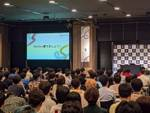

エムスリーテックブログ
https://www.m3tech.blog/
エムスリー(m3)のエンジニア・開発メンバーによる技術ブログです
フィード

Kotlin Fest 2024 参加レポート 27
27
エムスリーテックブログ
Kotlin Fest 2024 こんにちは！ マルチデバイスチームの小林(@bakobox)とデジスマチームの荒谷(@_a_akira)と大和(@daiwahome0)です。 Kotlinに関する技術カンファレンス「Kotlin Fest 2024」が6月22日に開催されました！*1 エムスリーはひよこスポンサーとして協賛させていただき、弊社社員も何人か参加したので振り返りを行いたいと思います！ (Kotlin Festスタッフとして星川(@oboenikui)も参加していました) *1:https://www.kotlinfest.dev/kotlin-fest-2024
8日前
CVPR2024が開催中なので、エムスリー AI・機械学習チームの推し論文を勝手に紹介するぜ！ 48
エムスリーテックブログ
こんにちは。エンジニアリンググループのAI・機械学習チームに所属している三浦(@mamo3gr) です。弊チームでは毎週1時間の技術共有会を実施しており、各自が担当するプロダクトの技術や、最近読んだ論文を紹介しています。今週はCVPR2024が開催されていることもあり、同学会の論文読み会となりました。1セッション1名の担当で、各自がセッション内で気になった論文の詳細を解説します。本ブログではその一部として、セッションごとの「推し論文」を紹介します。 DALL-E 3が生成した「シアトル開催のコンピュータビジョンの学会会場」のイメージ図
11日前

スピード感のあるギークな勉強会のリアル〜実用Git第3版の輪読会を題材に
エムスリーテックブログ
まえがき こんにちは。AI・機械学習チームの三浦 (@mamo3gr) です。2024年5月30日、チーム横断で実施していた「実用Git 第3版」の輪読会が足掛け2ヶ月で大団円を迎えました。振り返ってみると、エムスリーのエンジニアが持つ資質であるリーダーシップ、スピード感、ギークさがにじみ出ていた会でした。本記事ではこの輪読会の様子をお伝えするとともに、エンジニアリンググループの雰囲気を知っていただければと思います。
18日前
話題のLLMローコード構築ツールDifyをAWSのマネージドサービスで構築してみた
エムスリーテックブログ
こんにちは。エムスリーエンジニアリンググループのコンシューマチームに所属している園田です。 普段の業務では AWS やサーバーサイド、フロントエンドで遊んでいるのですが、最近はもっぱら OpenAI や Claude3 で遊んでます。 今回は、最近巷で話題の LLM ローコード構築ツールである Dify の OSS 版を AWS のマネージドサービスのみを使って構築してみました。 DifyとはオープンソースのLLMアプリ開発プラットフォームで、様々なLLMを使用してChatGPTのGPTsのようなものがノーコードで簡単に作れます。 引用元: DifyでSEO記事作成を試してみる｜掛谷知秀 試し…
1ヶ月前
ハマったポイントたくさんあったけどPlay3.0/Scala3.3へバージョンアップできたよ
エムスリーテックブログ
こんにちは。エムスリーエンジニアリンググループでScalaとマミさんが好きな安江です。今回は私が所属している製薬企業向けプラットフォームチームのPlay製プロダクトのPlay/Scalaバージョンアップのお話です。当初Play2.8にバージョンアップしていたのですが、その最中にPlay2.9/Play3.0やScala LTSが出たりもしました。最終的にPlay3.0/Scala3.3にバージョンアップできて本番稼働できたサービスもあるので、そのバージョンアップの経緯をご紹介します。 Play2.8への道のり Play3.0へのバージョンアップ ハマり1：依存ライブラリがPlay2系に依存して…
2ヶ月前
TSKaigiのスポンサーです、リフレッシュクイズの解答解説をお送りします
エムスリーテックブログ
5月11日(土)に開催されたTSKaigi2024に、エムスリーエンジニアリンググループはリフレッシュメントスポンサーとして協賛しました。リフレッシュメントコーナーでは、レッドブル・ラムネ・焼き菓子等々を提供しておりましたが、その中でも一際目立っていたであろうものが....『難読コードクイズ付き』のコアラのマーチ！ ！ リフレッシュメントブース ということで今回は、TSKaigiでリフレッシュメントクイズとして出題したコードクイズの解説をお送りします。
2ヶ月前
目指すは企業価値最大化！？グループ会社支援チームのご紹介
エムスリーテックブログ
エンジニアリンググループ、プロダクトマネージャーの岩田(@a___iwata)です。 今回はプロダクトマネジメントではなく、私が兼務しているグループ会社支援チームでの挑戦について記事を書きます。 グループ会社支援って何？ どんな面白さがあるの？ といった疑問に応えられればと思います。
2ヶ月前
PdMインターンを経て、エムスリーが推しになった話
エムスリーテックブログ
初めまして！ 2024年2-3月にエムスリーのデジスマチームで2か月弱PdMとしてインターンに参加しました杉本です。エムスリーにFY25新卒PdMとして入社することが決まっており、その前哨戦として取り組まさせていただきました。この記事では、私がインターン中に取り組んだこと、得た学びについて簡単にご共有できればと思います。
2ヶ月前
TSKaigiのスポンサーです、リフレッシュメントについて全てをお話します
エムスリーテックブログ
はじめに TSKaigi本番も迫り緊急でテックブログを書いています、VPoEの河合です。 来る5月11日(土)、TSKaigi 2024が開催されます。エムスリーエンジニアリンググループは、TSKaigiをリフレッシュメントスポンサーとして応援しています。 本記事は、少しばかりTSKaigiの宣伝をしつつ、エムスリーのJavaScript/TypeScript文化のお話をするものです。 はじめに TSKaigiとは エムスリーにおけるTypeScript 学生向けLTも開催 おわりに We are hiring !!
2ヶ月前
OOMしたCronJobのメモリ制限を「いい感じ」に増やし、不必要な課金・障害対応を減らす
エムスリーテックブログ
初めまして、2024年3月後半にエムスリーのAI・機械学習チームで10日間インターンに参加させていただいた東（@azuma_alvin）です。 もしタイトルが何かに似ていると感じた方がいれば、只者ではないと思われます。 洗練されたデザインでかっこいいと思ったエムスリーオフィスの受付の写真 この記事では、KubernetesのCronJobでOOM（Out Of Memory）が発生した時に「いい感じ」にメモリ制限を増加させてくれるbroomの開発経緯とその実装についてお話しします。 また、インターン期間で感じたエムスリーという「ギーク集団」の中で開発する楽しさについてもお伝えできればと思います…
3ヶ月前
AI・機械学習チームでのプロダクトマネジメントの学びを振り返る
エムスリーテックブログ
はじめまして、エムスリーエンジニアリングGプロダクトマネージャーの植田です。23年8月にエムスリーに入社し、エンジニア十数名が所属するAI・機械学習チームへ専任プロダクトマネージャーとして参画しています。スタートアップカルチャーが浸透している本チームで半年強働く中での学びを振り返りたいと思います。 DALL·E 3で生成したプロダクトマネージャーが学んでいる絵
3ヶ月前
プロダクトマネージャーが不確実性を乗り越えるために必要な信念の話
エムスリーテックブログ
こんにちは、エンジニアリングG プロダクトマネージャーの佐野です。 私は今、新規プロダクトを立ち上げている最中です。この過程で、プロダクトを成功させるためには、自分自身がプロダクトの価値を信じて、成功のためにあらゆる手段を尽くすことが重要だと学びました。プロダクトマネージャーは、不確実な世界に踏み込むことも多く、自分の今選んでいる道が本当に正しいのか、不安になるようなこともあると思います。そのような方にこの記事が届けばと思い、経験と学びをシェアします。 娘と一緒に富士宮にある実家に帰った際の富士山の写真。本文には特に関係ありません。
3ヶ月前
続・ムダな仕事を増やしてませんか？ ~ MLの実行パイプラインでworker間の重複作業をなくす ~
エムスリーテックブログ
DALL-E作成の「worker間で重複タスクを確認しながら作業を進める」イメージ図です こんにちは。AI・機械学習チーム（以下AIチーム）の池嶋(@mski_iksm)です。 仕事で、誰か一人がやればいい作業を、気がついたら同僚と同じタイミングでやっていた、という経験はありませんか？ せっかく頑張って作った機能が実は被っていてムダになってしまった。。。というのは誰もが悲しいものです。 そうならないように作業チケットを切るなどしてタスクを中央管理する方法もありますが、もっとゆるくやりたいこともあるかと思います。 そういうときは一言「この作業私がやりますね！」と声掛けをすれば済みますね。 以前の…
3ヶ月前
チーム内勉強会はじめました。
エムスリーテックブログ
こんにちは、エムスリーエンジニアリンググループ/ BIR(Business Intelligence and Research) チーム の遠藤(@en_ken)です。 エムスリーでは、隔週LT大会であるところのTach Talkや、自発的なチーム横断勉強会など、技術交流の取り組みが活発です*1。 私たちのチームでは、そこに加えて新たな取り組みとして「チーム内勉強会」を今年の1月から始めました。今回はこちらの取り組みについて紹介します。 「エムスリーエンジニアリンググループのチーム内勉強会」のAI生成画像です *1:*TechTalkはこちらの記事にまとまっています https://www.m…
3ヶ月前
入社4ヶ月目で73時間かかるバッチ処理を7倍以上高速化した話
エムスリーテックブログ
こんにちは。エンジニアリンググループの武井です。 私は現在、デジカルチームに所属し、クラウド電子カルテ、エムスリーデジカルの開発に携わっています。 昨年夏にエムスリーに入社し、早くも半年が経過しました。 digikar.co.jp この記事では、私が入社してから4ヶ月目に取り組んだ、バッチ処理の運用改善について振り返ります。 特に、新しくチームに加わったメンバーとして意識した点に焦点を当ててみたいと思います。 これから新しいチームに参加する方の参考になれば幸いです。
3ヶ月前
フルスクラッチして理解するOpenID Connect (4) stateとnonce編
エムスリーテックブログ
こんにちは。デジカルチームの末永(asmsuechan)です。この記事は「フルスクラッチして理解するOpenID Connect」の4記事目です。前回はこちら。 www.m3tech.blog
3ヶ月前
フルスクラッチして理解するOpenID Connect (3) JWT編
エムスリーテックブログ
こんにちは。デジカルチームの末永(asmsuechan)です。この記事は「フルスクラッチして理解するOpenID Connect」の全4記事中の3記事目です。前回はこちら。 www.m3tech.blog
4ヶ月前
フルスクラッチして理解するOpenID Connect (2) トークンエンドポイント編
エムスリーテックブログ
こんにちは。デジカルチームの末永(asmsuechan)です。この記事は「フルスクラッチして理解するOpenID Connect」の2記事目です。前回はこちら。 www.m3tech.blog
4ヶ月前
フルスクラッチして理解するOpenID Connect (1) 認可エンドポイント編
エムスリーテックブログ
こんにちは。デジカルチームの末永(asmsuechan)です。 この記事では、OpenID Connect の ID Provider を標準ライブラリ縛りでフルスクラッチすることで OpenID Connect の仕様を理解することを目指します。実装言語は TypeScript です。 記事のボリュームを減らすため、OpenID Connect の全ての仕様を網羅した実装はせず、よく使われる一部の仕様のみをピックアップして実装します。この記事は全4回中の第1回となります。 なお、ここで実装する ID Provider は弊社内で使われているものではなく、筆者が趣味として作ったものです。ですの…
4ヶ月前
間質性肺炎を検出するAIを開発し、その有効性を検証した研究を論文化しました
エムスリーテックブログ
こんにちは、AI・機械学習チームの浮田です。最近、私が筆頭著者の論文が公開されたので、今回はその紹介をします。 発表した論文はこちらです： www.ncbi.nlm.nih.gov この論文では、 胸部X線 (レントゲン) から間質性肺炎を検出するAIの評価を行いました。 結果、このAIを使うことで医師の読影成績が統計的有意に改善しました。 このAIを使うことで間質性肺炎の見落としを減らすことができることが期待されます。 エンジニアリンググループで論文を書くのは珍しい機会でしたが、査読対応など大変な時も経て無事公開することができました。 図1. 今回開発・検証した医療AIの実際の画面。プレスリ…
4ヶ月前
Goaのlinterを作った: Goalint
エムスリーテックブログ
永山です。 本記事では筆者の開発した、Go製のWebフレームワーク Goa (v3) 向けのlinterツール goalint を紹介します。 些細な間違いの検知を人間に頼ることはやめたい Goa とは モチベーション 既存のlinter goavl IBM OpenAPI Validator goalint 使用方法 goavlとのアプローチの違い 結果 We are hiring!!
5ヶ月前
PIVOT Growth DriversにVPoE河合とCTO山崎がダブルで出演しました
エムスリーテックブログ
はじめに 最近アークナイツというゲームにハマっています、VPoEの河合(@vaaaaanquish)です。 皆さんは、PIVOTというYouTubeチャネルをご存知でしょうか。 PIVOT株式会社さんが運営しているビジネスチャンネルで、登録者100万人超え、様々なスペシャリストや経営者が出演するビジネスマンに人気のチャンネルです。私も良く見ています笑 www.youtube.com 今回、PIVOTさんが別途運営している『PIVOT Growth Drivers』というPodcast番組に、私河合とCTO兼VPoPの山崎が出演しました。 本記事では、その内容の紹介や感想をざっくばらんに書いてい…
5ヶ月前
型を少し工夫して、より安全なコードへ
エムスリーテックブログ
こんにちは、デジスマチームでエンジニアをやっている堀田です。 これまで、TypeScriptの型で色々試したことがあります。 2年前: TSの型で麻雀の点数計算 最近: 型で足し算 遊ぶことの方が多かったですが、先日M3 TechTalkで実用的かも？と思える話をしました。 そこでは、3つの場面を想定して、それぞれの場面でより安全なコードを書くための型定義を提案しました。 この記事では、その時の話をまとめて紹介します。
6ヶ月前
230回続く社内LT大会の忘年会が盛り上がった件について
エムスリーテックブログ
オフライン用にSlackのTechTalkチャンネルから情報取得して名札を作るスクリプトを書いたところ出来上がってしまったSimple Pollさんの名札。本文とは関係ありません。 新年あけましておめでとうございます。 年末年始は『BURN THE WITCH #0.8』が最高でした、エムスリーVPoE 河合(@vaaaaanquish)です。 さて、エムスリーエンジニアリンググループには『Tech Talk』という技術LT大会文化がありまして、隔週でエンジニアの多くが参加して技術の話で盛り上がっています。 本記事は、忘年会を含めて開催しましたTech Talk オフライン回の開催報告記です。…
6ヶ月前
AI・機械学習チーム最強MR(Merge Request)決定戦2023
エムスリーテックブログ
AI・機械学習チームの(中村@po3rin)です。 今年もこの季節がやってきました。エムスリーAI・機械学習チームの最強MR決定戦のお時間です。 MRとはMerge Requestの略称です。 GitHubでいうところのPR (Pull Request) にあたります。 この記事ではAI・機械学習チームが毎年恒例で行なっているベストMRのトップ10について発表します。 このベストMRはチーム内でこれは最高だった！というMRをノミネートしていき、その中で決選投票をしてベスト10を決めました。 今年も熾烈な闘いを勝ち上がった至極のMRがノミネートされました。
6ヶ月前
DMARCの対応って進んでますか？
エムスリーテックブログ
こんにちは。エムスリーでSREやセキュリティに従事している山本です。 以前に、「Gmailのメール認証規制強化への対応って終わってますか？」という記事を書かせていただいておりますが、そこでちょい出しだけしたDMARCについて書かせていただきたいと思います。 www.m3tech.blog Gmailへの対応を実施するだけならば、「とりあえずよくわかんないけど入れておけばOK」なのですが、そもそもDMARCは何のために存在していてどのように活用にするのかというところに触れていきたいと思います。 DMARCとは SPF/DKIM DMARC登場 DMARCで実施できるポリシー三種 ポリシーの強化 …
6ヶ月前
2023年は3段階でシフトチェンジ！2024年はさらに加速してやっていきます！
エムスリーテックブログ
皆さんこんにちは、こんばんは。昨年、スノーピークのIGTフレームのノーマル（3ユニットのほう）を2つ買ったにも関わらず、年内途中でVERNEのVST Maestro SYSTEM TABLE Blackを2つ調達し、4ユニットx2になってしまって相変わらずな取締役CTO兼VPoPの山崎です。 本ブログはエムスリー Advent Calendar 2023の25日目の記事です。 ちなみに昨日は弊社VPoEばんくしこと河合さんの素晴らしい記事でした！エムスリーエンジニアリンググループの文化がよくまとまっておりますので、まだ読んでいない人は是非ご一読ください^^。 www.m3tech.blog D…
6ヶ月前
ギークでスマートな人達が活躍する組織を支える3つのポイント
エムスリーテックブログ
長女と2人で水族館に行ったときの写真。帰路のバスで「2人でまた来たいねえ」と言われて泣きました。例のごとく本文とは全く関係がありません。 はじめに こんにちは。最近、ダンダダンのアニメ化が発表され、嬉しい気持ちのエムスリー エンジニアリンググループ VPoE 河合(@vaaaaaanquish)です。 皆さんは『Hit Refresh』という書籍をご存知でしょうか。 現Microsoft CEOであるサティア・ナデラの自伝であり、OpenAIやGitHubと現在"Hit"を続けているMicrosoftに成る過程において、会社を"Refresh"してきた物語が書かれています*1。 その中にあるサ…
6ヶ月前
ノーコードツールの高度な処理をコードで実装！iOS・macOSのショートカットアプリで手軽に定形プロンプト
エムスリーテックブログ
ChatGPTにダジャレを生成してもらうためのプロンプトを作ったので、iOS・macOS向けノーコードツールのショートカットアプリを使って、即座にダジャレを生成できるようにします。
6ヶ月前
3年間Stripe Connectを運用した経験を共有します
エムスリーテックブログ
こちらはエムスリー Advent Calendar 2023の22日目の記事です。 こんにちは、エムスリーエンジニアリンググループ、デジスマ診療チームの山本 (id:shunyy) です。 医療機関向けSaaSであるデジスマ診療は、開発開始からちょうど3年が経ち、現在では予約・問診等、多様な機能を提供していますがリリース当初は決済機能のみを提供していました。そんなデジスマのコア機能である決済機能はStripe Connectを利用しており、今回は3年間運用した学びを共有したいと思います。 デジスマ診療のプロダクトの内容は以下のスライドを御覧ください。 speakerdeck.com そもそもS…
6ヶ月前